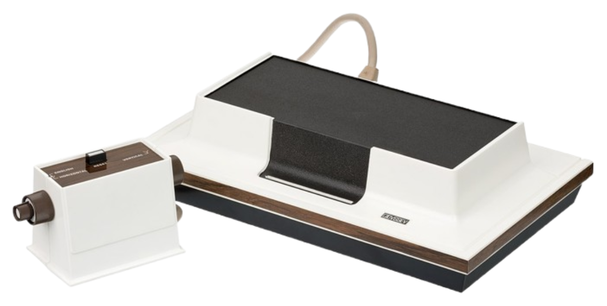

Magnavox Odyssey
é o primeiro console de videogame doméstico comercial da história. Foi apresentado pela primeira vez em abril de 1972[1] e lançado em setembro do mesmo ano, antecipando o jogo Pong do Atari. É um console digital, embora muitas vezes seja erroneamente definido como analógico, devido à incompreensão de seu projeto de hardware
Seus jogos eram focados em partidas de 1 contra 1, como tênis de mesa, e alguns modelos posteriores incluíam acessórios como uma pistola de luz.

Versões Odyssey

Odyssey 100 (1975)
O primeiro console "dedicado" da série, com jogos de tênis e hóquei

Odyssey 200 (1975)
Uma "edição de luxo" do Odyssey 100, com suporte para quatro jogadores e o jogo "smash"

odysseyv 300(1976)
Um redesenho do Odyssey 200, com mais níveis de dificuldade

Odyssey 400 (1976)
Introduziu um placar digital, graças a um novo chip da Texas Instruments

Odyssey 500 (1976)
Substituiu os "batedores" simples por desenhos de jogadores na tela e adicionou mais jogos.

Odyssey 2000 (1977)
Versão atualizada do Odyssey 300, com quatro jogos (Tênis, Hóquei, Smash e Practice).

Odyssey 400 (1976)
Introduziu um placar digital, graças a um novo chip da Texas Instruments
Odyssey 400 (1976)
Introduziu um placar digital, graças a um novo chip da Texas Instruments